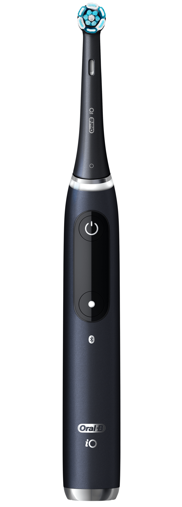

Bienvenue dans la nouvelle génération de brosse à dents
Plus de 1800 utilisateurs on testés
Améliore les conditions en 8 semaine
6 fois plus d’élimination de la plaque de la gencive.
6 ans de recherche pour cette technologie
250 brevets déposés a travers le monde

Chronomètrez votre brossage de dent
L’iO mesure votre temps de brossage, si vous atteignez les 2 minutes recommandées, l’écran vous gratifie en souriant et en clignant des yeux. Le temps de brossage devient donc une formalité avec la brosse à dents Oral B iO.
En savoir plus
Blancheur éclatante
Un nettoyage poussant au maximum les performances de la brosse à dents, afin d’obtenir une blancheur parfaite. Ce nettoyage permet d’apporter un éclat et une brillance inégalés à vos dents, pour sourire à la vie.
En savoir plus
Entretien dentaire régulière
Une brosse à dents interactive, souhaitant la bonne journée, qui motive l’utilisateur à en faire usage au quotidien. Elle apporte un réel suivi, accompagnant jour après jour l’utilisateur pour une régularité dans le brossage.
En savoir plus
Performances incroyables
Un brossage agréable et optimal pour vos dents, afin de les nettoyer dans des conditions optimales. La brosse à dents vient épouser la forme de chacunes des dents avec une délicatesse incroyable, venant caresser l’émail tout en nettoyant en profondeur.
En savoir plus
Un Chargeur magnétique intelligent
La brosse à dent Oral B iO se recharge intelligemment à l’aide d’un chargeur magnétique garantissant une charge complète de la brosse à dent en seulement 3 heures. Il suffit de la déposer sur le socle, et elle se recharge automatiquement à l’aide d’un simple contact.